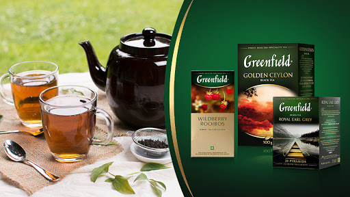

Despre Brand
Servirea ceaiului Greenfield - momentul de armonie și răsfăț în care realizezi că iubești viața, deoarece scopul fondării companiei de ceaiuri Greenfield, în anul 2003, a fost stabilirea armoniei dintre tine și natură. Astfel, Greenfield îți oferă o colecție de ceaiuri din sorturi alese pentru a crea atmosfera potrivită sufletului tău.
